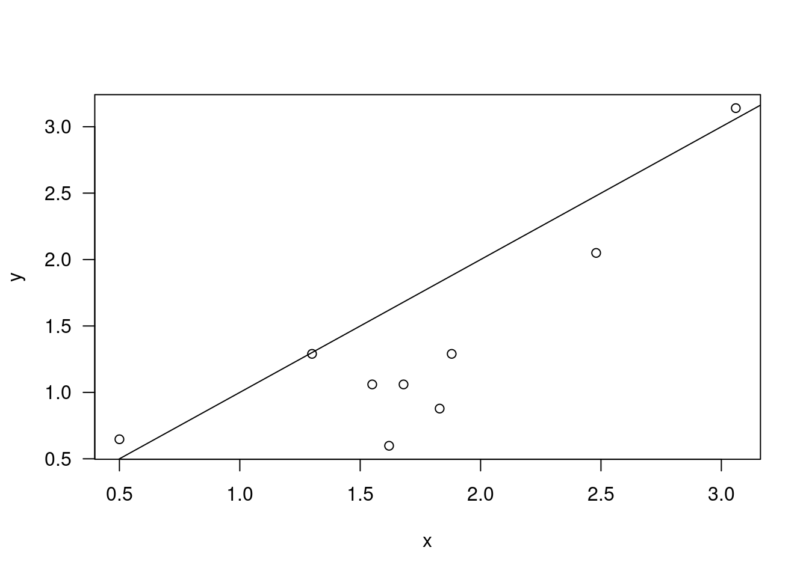

3 Wilcoxon rank sum
Traditional parametric testing methods are based on the assumption that dat are generated by well-known distributions, and characteristic by one or more unknown parameters. Critical values and p-values are computed according to distribution of the test statistic under the null, derived from assumptions related to the underlying distribution of data.
Nonparametric methods require mild assumptions regarding the underlying populations from which data are obtained. When parametric assumptions do not hold, they are valid, and when parametric assumptions hold, nonparametric methods are only slighly less powerful than parametric.
3.0.1 Two sample T test
\[\begin{equation} X_i \overset{\text{iid}}{\sim} N(\mu_x, \sigma^2), i \le m \\ Y_j \overset{\text{iid}}{\sim} N(\mu_y, \sigma^2), j \le n\\ X_i \text{independent} of Y_j\\ \text{A natural estimate of} \mu_x - \mu_y is \bar{X} - \bar{Y} (MLE) \\ \bar{X} - \bar{Y} \sim N(\mu_x - \mu_y, \sigma^2(\frac{1}{n} + \frac{1}{m})) \\ S_x^2 = \frac{1}{m-1}\sum_{i=1}^{m}(X_i - \bar{X})^2\\ S_y^2 = \frac{1}{n-1}\sum_{i=1}^{m}(Y_i - \bar{Y})^2\\ S_p^2 = \frac{\sum_{i=1}^{m}(X_i-\bar{x})^2+\sum_{j=1}^{n}(Y_j-\bar{Y}^2)}{m+n-2} \\ T = \frac{(\bar{X} - \bar{Y})- (\mu_x-\mu_y)}{s_p\sqrt{\frac{1}{m}+\frac{1}{n}}} \sim t_{m+n-2} \\ H_o: \mu_x = \mu_y vs.H_1: \mu_x \ne \mu_y(\mu_x > \mu_y, \mu_x < \mu_y) \end{equation}\]
m=28; n=30; x=rnorm(m,mean=1,sd=1); y=rnorm(n,mean=1.1,sd=1);
t.test(x,y)##
## Welch Two Sample t-test
##
## data: x and y
## t = -0.069813, df = 53.137, p-value = 0.9446
## alternative hypothesis: true difference in means is not equal to 0
## 95 percent confidence interval:
## -0.5306333 0.4949349
## sample estimates:
## mean of x mean of y
## 0.9070495 0.92489873.0.2 Wilcoxon Rank Sum Test
We have two samples, from two populations (X and Y), and interest is in the difference of the two population means. T.test can be used for one sample and two sample. Wilcoxon is a nonparametric version of the two sample t test. X and Y must be independent. Alternative hypothesis is that X at a given point t is less than the given distribution of Y… in other words, X larger than Y.
3.0.3 Hypothesis
- $H_0 : G(t) = F(t) $, for all t
- $H_1: G(t) F(t) $, X is stochastically larger than Y
3.0.4 Location Shift Model
- \(X = Y +\Delta\)
- \(\Delta\): location shift, or treatment effect
- if \(\Delta > 0 (<0)\), it is the expected increase (decrease) due to the treatment
- if EX and EY exist, \(\Delta = EX - EY\)
- in terms of the location-shift model, \(H_0\) becomes \(H_0: \Delta = 0\)
3.0.5 Rank
u=c(-1,0,2); c( median(u), mean(u), rank(u) );## [1] 0.0000000 0.3333333 1.0000000 2.0000000 3.0000000u[3]=100; u## [1] -1 0 100c( median(u), mean(u), rank(u));## [1] 0 33 1 2 3u[1]=-200; u## [1] -200 0 100c( median(u), mean(u), rank(u));## [1] 0.00000 -33.33333 1.00000 2.00000 3.00000u=c(-1,-1,0,2); rank(u); #?rank## [1] 1.5 1.5 3.0 4.03.0.6 Test Statistic
- Combine the two sample \({X_1,...,X_m}\) and \({Y_1,...,Y_n}\) into one, and tank them from 1 to m+n, low to high
- Let \(R_i\) denote the rank of \(X_i\) in this combined ranking
- The Wilcoxon test statistic is $ W = _{i=1}^{m}R_i$
- where \(min W = 1+ ... + m = m(m+1)/2\)
- max \(W = (n+1) + ... + (n+m) = m(2n+m+1)/2\)
3.0.7 Distribution of W
- \(P(W=k)\) = ?, min \(W\le k \le max W\)
- P(W = minW) = P(W = maxW) = n!m!/(m+n)!
- The Mann-Whitney Statistic
- \(U = \sum_{i=1}^{m}\sum_{j=1}^{n}l_{x_{i}>y_{j}}\)
- The statistic U counts the number of “y before x” predecessors
- \(W = U + \frac{m(m+1)}{2}\)
- min U = 0, max U = mn
3.0.8 Computation
m=4; n=5; mn=m*n
c( dwilcox(0,m,n), dwilcox(mn,m,n), 1/choose(m+n,m))## [1] 0.007936508 0.007936508 0.007936508u=0:mn; plot(u, dwilcox(u,m,n),type="h",las=1)
- \(H_0: \Delta = 0\) vs. \(H_1: \Delta > 0\)
- Reject \(H_0\) if \(U\ge ui_{\alpha}\)
- \(H_0: \Delta = 0\) vs. \(H_1: \Delta <0\)
- \(H_0: \Delta = 0\) vs. \(H_1: \Delta \ne 0\)
3.0.9 Example
x=c(0.80, 0.83, 1.89, 1.04, 1.45, 1.38, 1.91, 1.64,
0.73, 1.46); y=c(1.15, 0.88, 0.90, 0.74, 1.21);
oxy=outer(x,y,function(u,v){(u>v)*1})
u=sum(oxy); u## [1] 35pwilcox(u-1,length(x),length(y),lower.tail=F)## [1] 0.1272061wilcox.test(x, y, alternative = "g",conf.int=T);##
## Wilcoxon rank sum exact test
##
## data: x and y
## W = 35, p-value = 0.1272
## alternative hypothesis: true location shift is greater than 0
## 95 percent confidence interval:
## -0.08 Inf
## sample estimates:
## difference in location
## 0.3053.0.10 Hodges-Lehman Estimate
xy=outer(x,y,"-"); median(xy)## [1] 0.3053.0.11 Example
x=c(18.85,16.93,19.29,18.31,17.27,18.64,17.82,19.00,19.58,18.04,17.27,
19.19); y=c(19.23,19.57,19.50,18.64,18.70,19.54,19.04,20.67,20.71,
18.99,19.37,19.06); par(mfrow=c(2,1));
hist(x,xlim=range(x,y)); hist(y,xlim=range(x,y));
wilcox.test(x,y,alternative="less",conf.int=T)## Warning in wilcox.test.default(x, y, alternative = "less", conf.int = T): cannot
## compute exact p-value with ties## Warning in wilcox.test.default(x, y, alternative = "less", conf.int = T): cannot
## compute exact confidence intervals with ties##
## Wilcoxon rank sum test with continuity correction
##
## data: x and y
## W = 26.5, p-value = 0.004672
## alternative hypothesis: true location shift is less than 0
## 95 percent confidence interval:
## -Inf -0.350075
## sample estimates:
## difference in location
## -1.002781wilcox.test(x,y,alternative="less",conf.int=T,exact=F,
correct=T)##
## Wilcoxon rank sum test with continuity correction
##
## data: x and y
## W = 26.5, p-value = 0.004672
## alternative hypothesis: true location shift is less than 0
## 95 percent confidence interval:
## -Inf -0.350075
## sample estimates:
## difference in location
## -1.002781wilcox.test(x,y,alternative="less",conf.int=T,exact=F,
correct=F)##
## Wilcoxon rank sum test
##
## data: x and y
## W = 26.5, p-value = 0.004293
## alternative hypothesis: true location shift is less than 0
## 95 percent confidence interval:
## -Inf -0.3500476
## sample estimates:
## difference in location
## -1.0027813.0.12 Kolmogorov Smirnov
x=rnorm(50)
y=runif(30)
# Do x and y come from the same distribution?
ks.test(x, y)##
## Two-sample Kolmogorov-Smirnov test
##
## data: x and y
## D = 0.47333, p-value = 0.0002638
## alternative hypothesis: two-sided3.1 Sign test and Wilcoxon signed rank
3.1.1 Sign test and Wilcoxon signed rank test
3.1.2 Example
3.1.3 Wilcoxon signed rank test
3.1.4 Large sample approximation
3.2 Kruskal Wallis
3.2.1 F test
3.2.2 Ansari-Bradley
3.2.3 Kruskal-Wallis
3.3 Friedman Rank
Nonparametric version of two-way ANOVA. The collected data of an experimental design involves two factors, each at two or more levels, the treatment factor and blocking factor.
library(BSDA)## Loading required package: lattice##
## Attaching package: 'BSDA'## The following object is masked from 'package:datasets':
##
## Orangex=c(1.83,0.50,1.62,2.48,1.68,1.88,1.55,3.06,1.30);
y=c(0.878,0.647,0.598,2.05,1.06,1.29,1.06,3.14,1.29);
plot(x,y,las=1); abline(0,1)
xy=cbind(x,y); xy## x y
## [1,] 1.83 0.878
## [2,] 0.50 0.647
## [3,] 1.62 0.598
## [4,] 2.48 2.050
## [5,] 1.68 1.060
## [6,] 1.88 1.290
## [7,] 1.55 1.060
## [8,] 3.06 3.140
## [9,] 1.30 1.290axy=apply(xy,1,rank); axy## [,1] [,2] [,3] [,4] [,5] [,6] [,7] [,8] [,9]
## x 2 1 2 2 2 2 2 1 2
## y 1 2 1 1 1 1 1 2 1(rowMeans(axy)-3/2)^2## x y
## 0.07716049 0.07716049S=sum((rowMeans(axy)-3/2)^2)*12*9/6
S## [1] 2.777778pchisq(S,1,lower.tail=F)## [1] 0.0955807n=length(x); da=cbind(z=c(x,y),gr=c(rep(1,n),rep(2,n)),blk=rep(1:n,2))
da## z gr blk
## [1,] 1.830 1 1
## [2,] 0.500 1 2
## [3,] 1.620 1 3
## [4,] 2.480 1 4
## [5,] 1.680 1 5
## [6,] 1.880 1 6
## [7,] 1.550 1 7
## [8,] 3.060 1 8
## [9,] 1.300 1 9
## [10,] 0.878 2 1
## [11,] 0.647 2 2
## [12,] 0.598 2 3
## [13,] 2.050 2 4
## [14,] 1.060 2 5
## [15,] 1.290 2 6
## [16,] 1.060 2 7
## [17,] 3.140 2 8
## [18,] 1.290 2 9friedman.test(z~gr|blk,data=da)##
## Friedman rank sum test
##
## data: z and gr and blk
## Friedman chi-squared = 2.7778, df = 1, p-value = 0.09558test.stat=(sum(x>y)-n/2)/sqrt(n/4); t2=test.stat^2
c(2*pnorm(test.stat,lower.tail=F),t2,pchisq(t2,1,lower.tail=F))## [1] 0.0955807 2.7777778 0.0955807wilcox.test(x,y,paired=T)##
## Wilcoxon signed rank exact test
##
## data: x and y
## V = 40, p-value = 0.03906
## alternative hypothesis: true location shift is not equal to 03.4 Correlation
3.4.1 Pearson
3.4.2 Kendall
3.4.3 Spearman Rank
3.4.4 Cohen’s kappa
3.5 Comparing proportions in 2 X 2 tables
3.5.1 Large sample test procedures
3.5.2 2X2 Chi-Squared test of homogeneity
3.5.3 2X2 Chi-Squared test of independence
3.6 Relative Risk/Odds Ratio
3.6.1 Relative Risk
3.6.2 Odds
3.6.3 Example
3.6.4 Hypergeometric distribution
3.7 MH
3.7.1 Binomial coefficient
The number of unordered samples of y objects selected from n objects without replacement is
\[ {n \choose y} = \frac{n \times (n-1) \times (n-y-1)}{y!}) \\ = \frac{[n \times (n-1) \times (n-y+1)](n-1)!}{(n-1)!y!} \\ = \frac{n!}{(n-1)!y!}\]
3.7.2 Multinomial Distribution
3.8 McNemars
3.9 Stuart
3.10 Correlation
3.10.1 Pearson
3.10.2 Kendall
3.10.3 Spearman Rank
3.10.4 Cohen’s kappa
3.11 Friedman Rank
Nonparametric version of two-way ANOVA. The collected data of an experimental design involves two factors, each at two or more levels, the treatment factor and blocking factor.
library(BSDA)
x=c(1.83,0.50,1.62,2.48,1.68,1.88,1.55,3.06,1.30);
y=c(0.878,0.647,0.598,2.05,1.06,1.29,1.06,3.14,1.29);
plot(x,y,las=1); abline(0,1)
xy=cbind(x,y); xy## x y
## [1,] 1.83 0.878
## [2,] 0.50 0.647
## [3,] 1.62 0.598
## [4,] 2.48 2.050
## [5,] 1.68 1.060
## [6,] 1.88 1.290
## [7,] 1.55 1.060
## [8,] 3.06 3.140
## [9,] 1.30 1.290axy=apply(xy,1,rank); axy## [,1] [,2] [,3] [,4] [,5] [,6] [,7] [,8] [,9]
## x 2 1 2 2 2 2 2 1 2
## y 1 2 1 1 1 1 1 2 1(rowMeans(axy)-3/2)^2## x y
## 0.07716049 0.07716049S=sum((rowMeans(axy)-3/2)^2)*12*9/6
S## [1] 2.777778pchisq(S,1,lower.tail=F)## [1] 0.0955807n=length(x); da=cbind(z=c(x,y),gr=c(rep(1,n),rep(2,n)),blk=rep(1:n,2))
da## z gr blk
## [1,] 1.830 1 1
## [2,] 0.500 1 2
## [3,] 1.620 1 3
## [4,] 2.480 1 4
## [5,] 1.680 1 5
## [6,] 1.880 1 6
## [7,] 1.550 1 7
## [8,] 3.060 1 8
## [9,] 1.300 1 9
## [10,] 0.878 2 1
## [11,] 0.647 2 2
## [12,] 0.598 2 3
## [13,] 2.050 2 4
## [14,] 1.060 2 5
## [15,] 1.290 2 6
## [16,] 1.060 2 7
## [17,] 3.140 2 8
## [18,] 1.290 2 9friedman.test(z~gr|blk,data=da)##
## Friedman rank sum test
##
## data: z and gr and blk
## Friedman chi-squared = 2.7778, df = 1, p-value = 0.09558test.stat=(sum(x>y)-n/2)/sqrt(n/4); t2=test.stat^2
c(2*pnorm(test.stat,lower.tail=F),t2,pchisq(t2,1,lower.tail=F))## [1] 0.0955807 2.7777778 0.0955807wilcox.test(x,y,paired=T)##
## Wilcoxon signed rank exact test
##
## data: x and y
## V = 40, p-value = 0.03906
## alternative hypothesis: true location shift is not equal to 0